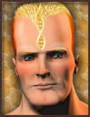

It could take several decades, or perhaps many thousands of years. But we can be sure of one thing: sooner or later, the human race as we know it will no longer be here. Don't panic, it's just good old evolution that's doing us in. Humanity will go extinct -- but who would care?
We'll admit it - we've been fooling you. When we talked of distant stuff like the Sun's death, or the homecoming of Nemesis, we pretended that there will still be people around in the distant future, just like today.
Well, forget it. Whatever inhabits the planet in several millions of years -- it won't be humans. The human race will have been replaced by... well, something else.
It's easy to see why. There's plenty of evidence we are still evolving. Europeans are getting taller. Northern Europeans are becoming more resistant to disease. And although it's controversial, there's some evidence we're getting smarter.
 |
|
|
Still, we are also 'devolving' -- getting worse at certain things.
That's because evolution is not about improving living things -- but simply, about adapting to the circumstances. And we're adapted to walking, and thinking, and working with our hands. The cost is that we have become lousy tree-swingers, and bad monkeys. Try eating a banana using only your feet, and you'll see what we mean.
Where will this take us in another million years? Nobody knows! It all depends on the circumstances.
Perhaps our brains will continue to grow, giving us ridiculous, enormous heads. Perhaps our planet will one day be inhabited by sentient brains sitting in a wheelchair, who knows?
But evolution could also demolish us. Say for some reason we are forced to live underground. This could, in theory, yield a humankind with no eyes! This is what happened to certain species of cave-dwelling fish.
And it could get worse. Suppose a deadly disease broke out. Now, suppose there was a only people genetically fit to fight off the disease, are pe
Experts agree on one thing, though. Our kind could transform a lot quicker than you think. We're already tinkering with the evolution of our species, for example by healing the sick. And that's just the beginning. Roughly speaking, there are two trends here: technology and gene tinkering.
1. Technology
Already, we are stuffing up our bodies with all kinds of goodies: artificial limbs and organs, plastic heart valves, titanium joints, contact lenses, hearing aides -- you name it. And no doubt we will continue to replace body parts with high tech gadgets. Already, scientists are experimenting with brain implants that help or even replace part of your brain!
Futurologists expect we will one day upgrade our minds with chips that boost our brain power, or even upload our mind to a computer. Or we would replace our vulnerable organs at birth, just to be sure.
So, how's that for evolution. In a few decades, we may have got to the point where we are no longer humans -- but machines. As astronomer Seth Shostak likes to put it: "You can improve horses by putting four-cylinder engines in them. But eventually, you can do without the horse part."
2. Genes
Or we could upgrade our DNA.
At this very moment, we're entering the age of genetic modification. Already,
we're upgrading the DNA of certain plants and animals -- and we, humans, are
next. We're about to improve our genetic code,
just like you would upgrade an outdated piece of computer software.
At first, this will lead to new cures for certain diseases. We will teach our DNA to fight off hereditary conditions, and in the longer run, viral infections and cancer. But it should also be possible to actually improve our bodies. Sportsmen will instruct their DNA to make more muscles, a feat already accomplished in animals. Others will tweak their DNA in order to lengthen their lives, or to become smarter.
Ultimately, the sky is the limit. Want bigger brains? Healthier organs? Bigger penises, larger breasts? Just tell your DNA to make it so. And hey, think big! Why not grow yourself wings, enhance your vision or make your body solar powered, so you can do without food?
In principle, it's all possible. Just think of our bodies as computers, the DNA being its software. We're about to upload software from other species. Almost every trick nature has ever programmed into DNA software in other species, could be running on our bodies soon. It's Mother Nature's freeware!
So,
where will it take our species? Our guess would be: to a point where
humans are no longer human. Scholars expect 'Numans', 'Transhumans', 'Unihumans',
'Astrans' -- and lots of other shiny sci-fi words. It will be the end of
mankind. But with some luck, it will at least be a happy end!